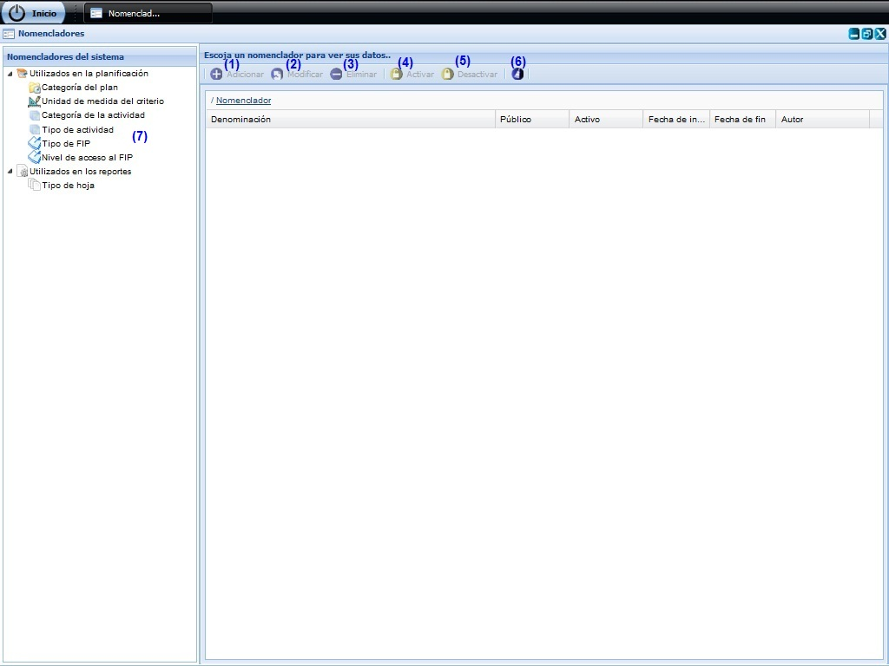
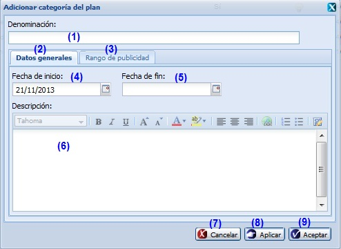
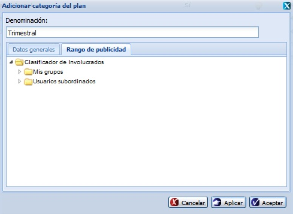
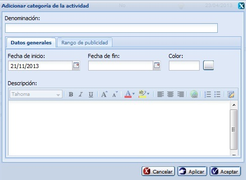
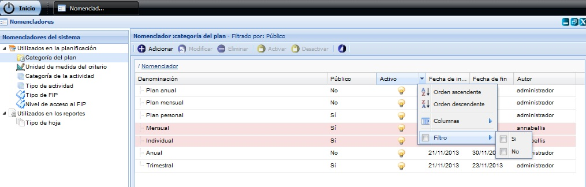

--NOMENCLADORES--
En esta funcionalidad se gestionan los nomencladores con los que trabajará el sistema. Para acceder a esta funcionalidad se selecciona Inicio/Planificación /Planificación de actividades/Configuración/ Nomencladores.
Una vez seleccionada la funcionalidad, aparecerá en pantalla la interfaz de la misma, donde el usuario autenticado podrá realizar las acciones que desee, en correspondencia con el acceso que tenga definido. Ver Figura 1.

Figura 1. Interfaz y acciones de la funcionalidad Nomencladores.
Las diferentes opciones que conforman la figura anterior permiten:
- Adicionar nomenclador, ver Acápite Adicionar nomenclador, esta acción permite adicionar nomencladores, cuando se presione el botón Aceptar o Aplicar de la interfaz el sistema mostrará un mensaje de información notificando que se adicionó el nomenclador.
- Modificar un nomenclador previamente seleccionado en el sistema. Una vez seleccionado el nomenclador y presionada la opción Modificar de la interfaz, el sistema le mostrará la interfaz con los datos cargados, posibilitando que se modifiquen los datos que se requieran. Si al modificar el nomenclador se introduce uno que ya existe, el sistema mostrará un mensaje de error. En caso de seleccionar la opción Modificar y no hacer cambios en la información referente al nomenclador seleccionado se debe mostrar un mensaje. El procedimiento del llenado de los datos y selección de los botones de la interfaz Modificar nomenclador es muy similar al descrito en la funcionalidad de Adicionar nomencladores. Este botón estará deshabilitado hasta tanto no se haya seleccionado un nomenclador.
- Eliminar un nomenclador previamente seleccionado en el listado. Esta acción permite eliminar el nomenclador deseado, una vez seleccionado se procede a seleccionar la opción Eliminar de la interfaz, automáticamente se mostrará un mensaje de confirmación, que se puede Aceptar o Cancelar según sea el caso, de presionar la opción Aceptar el sistema le mostrará un mensaje de información sobre el éxito de la operación realizada, quedando eliminado el nomenclador seleccionado, si cancela el mensaje de confirmación, el sistema permanece en la interfaz principal y no elimina el nomenclador. Si se selecciona un nomenclador que está siendo usado, el sistema desactiva el nomenclador, pues no lo puede eliminar y muestra un mensaje de información notificando que el nomenclador ha sido desactivado. En caso de que el nomenclador no esté siendo utilizado en el sistema, se muestra un mensaje de información notificando que el nomenclador fue eliminado correctamente. Este botón estará deshabilitado hasta tanto no se haya seleccionado un nomenclador.
- Activar. Una vez seleccionado el Tipo de Nomenclador deberá seleccionar el elemento que desea activar. Para Activar un nomenclador se debe tener presente las siguientes restricciones:
- El botón Activar se habilitará después de seleccionar un nomenclador que se encuentre desactivado.
Una vez que se ha tenido en cuenta la restricción mencionada anteriormente se debe seleccionar el nomenclador y se opta por la opción Activar de la interfaz, ver opción (4) figura 1. Seguidamente el sistema muestra un mensaje de confirmación, se acepta el mensaje de confirmación y muestra un mensaje del éxito de la operación realizada. De cancelar el mensaje de confirmación el sistema permanece en la interfaz principal y no se activará el elemento seleccionado.
- Desactivar. Una vez seleccionado el Tipo de Nomenclador deberá seleccionar el elemento que desea desactivar. Para Desactivar un nomenclador se debe tener presente las siguientes restricciones:
- El botón Desactivar se habilitará después de seleccionar un nomenclador que se encuentre activado.
Una vez que se ha tenido en cuenta la restricción mencionada anteriormente se debe seleccionar el nomenclador y se opta por la opción Desactivar de la interfaz, ver opción (5) figura 1. Seguidamente el sistema muestra un mensaje de confirmación, se acepta el mensaje de confirmación y muestra un mensaje del éxito de la operación realizada. De cancelar el mensaje de confirmación el sistema permanece en la interfaz principal y no se desactivará el elemento seleccionado.
- Limpiar filtro(s). Esta acción limpiará todos los criterios de búsqueda, deshabilitando los filtros realizados.
- Mostrar nomencladores existentes en la aplicación.
Adicionar nomenclador
Se presiona el botón Adicionar, opción (1) de la Figura 1. Inmediatamente aparecerá una ventana donde se podrán especificar los datos relacionados con el nomenclador que se desea adicionar, ver Figura 2.

Figura 2. Interfaz Adicionar nomenclador.
Las opciones de la figura anterior permiten:
- Introducir la denominación del nomenclador que desea insertar.
- Seleccionar la pestaña donde se gestionan los datos generales del nomenclador.
- Seleccionar la pestaña donde se introducen los datos del rango de publicidad del nomenclador.
- Seleccionar la fecha de inicio.
- Seleccionar la fecha de fin.
- Introducir una breve descripción del nomenclador. Este dato no es obligatorio.
- Cancelar las acciones y salir de la interfaz sin guardar los datos.
- Guardar los datos y limpiar los campos de la interfaz, permitiendo adicionar otro nomenclador.
- Adicionar los datos del nomenclador al listado y cerrar la interfaz.
Validación de los campos:
- El campo Denominación es obligatorio, en caso de dejar este campo vacío y presionar los botones Aceptar o Aplicar el sistema le notificará error, subrayando el campo en rojo y mostrando un mensaje de error, al pasar el cursor del mouse por encima del campo subrayado, y el mensaje de error “Por favor verifique hay campo(s) vacío(s)”. Este campo acepta caracteres alfanuméricos y algunos caracteres especiales. Al escribir otro tipo de carácter no permitido no permitirá su inserción. Por último debe saber que no es posible adicionar un nuevo nomenclador con la misma denominación que otro que ya está registrado en el sistema, de suceder esto el sistema le notificará con un mensaje de error.
- El campo Descripción puede ser vacío y admite cualquier tipo de caracteres de longitud infinita.
- La fecha de inicio así como la fecha de fin deberá seleccionarse del calendario que se muestra cuando se da clic en los campos de fecha. Los campos fecha de inicio y fecha de fin no permitirán al usuario escribir sobre ellos. Igualmente el sistema no permitirá al usuario seleccionar una fecha de fin anterior a la fecha de inicio. Pueden ser vacíos.
Rango de publicidad
En la pestaña Rango de publicidad debe seleccionar para qué usuarios será visible el nomenclador que está adicionando. Lo anterior se puede realizar seleccionando los usuarios y/o grupos de usuarios del árbol que se muestra en la figura 3.

Figura 3. Interfaz Rango de publicidad.
Nota:Si desea adicionar un nomenclador de tipo Categoría de actividad, procede a seleccionar el nomenclador y selecciona la opción Adicionar, ver figura 1. Una vez presionada dicha opción el sistema le mostrara la interfaz Adicionar categoría de la actividad, ver figura 4. El procedimiento del llenado de los datos y selección de los botones de la interfaz es similar al descrito en la funcionalidad de Adicionar nomenclador, teniendo en cuenta esta vez el botón Color donde indicará además el color, presionando el ícono correspondiente y luego seleccionar el color deseado de la tabla de colores que se muestra.

Figura 4. Interfaz Adicionar nomenclador/ Categoría de la actividad.
Validación de los campos:
- En caso de no seleccionar un color el sistema establecerá el color blanco por defecto.
Buscar nomenclador
Para realizar esta funcionalidad se debe estar en la interfaz principal Nomencladores, ver Figura 1, una vez que accedió a la misma se presiona clic en el botón que aparece en la parte derecha de cada columna, ver Figura 5.

Figura 5. Búsqueda por filtrado de columnas de la interfaz.
Se despliega la columna y se ofrece la posibilidad de realizar búsqueda mediante filtrado. Se introduce o selecciona el criterio de filtrado según la información que brinde la columna seleccionada. Inmediatamente se presiona la tecla Enter y el sistema mostrará en la interfaz los nomencladores según el criterio de filtrado seleccionado. En caso de que no exista nomencladores a mostrar para el criterio de filtrado seleccionado el sistema le notificará mostrando el siguiente mensaje de información: “No existen datos que se correspondan con los criterios de búsqueda especificados.”.